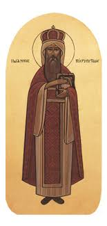

to the
Coptic Hymns Website
This website will have multiple coptic hymns ranging from tasbeha, to Pascha, to Joyful Season Hymns, and much more uploaded weekly.
Happy Thanksgiving!!
I said, "I will confess my sins to the Lord," and you forgave my guilt.
Psalm 32:5
On this day, the honorable Saint John of the Golden Mouth (Chrysostom), departed. He was born in the city of Antioch around the year 347 A.D., to a rich father, whose name was Sakondos and a pious mother, whose name was Anthosa. They brought him up well and reared him in the Christian tradition. He went to the city of Athens, where he learned the Greek wisdom in one of its schools. He surpassed many in knowledge and in virtue. He forsook the vanities of the world and became a monk at a young age in one of the monasteries. He had a friend whose name was Basilius, who was a monk before him in that monastery. They had the same interests and they practiced many virtues.
When his father departed, St. John did not keep any of his father's possessions, but gave all of his inheritance to the poor and the needy. He then lived an ascetic life full of strife.
In the monastery, there was a Syrian hermit whose name was Ansosynos. One night he saw the apostles, Peter and John, entering where the Golden Mouth was. St. John, the Apostle, gave him a Bible and told him, "Do not be afraid, whosoever you shall bind, shall be bound, and whosoever you shall loose, shall be loosed." The old hermit therefore realized that St. John Chrysostom would be a faithful shepherd.
The grace of the Lord filled St. John Chrysostom and he wrote homilies and sermons and he interpreted many books while he was still a deacon. It was St. Melatius, Patriarch of Antioch, who had raised him to this rank. Then he was ordained a priest by St. Phlapianus, St. Melatius' successor, by the guidance of the angel of the Lord.
When Nectarius, Patriarch of Constantinople departed, Emperor Arcadius summoned St. John and made him Patriarch. He conducted himself during his patriarchate in an apostolic manner. He continued teaching, preaching and interpreting the books of the church, both old and new. He boldly admonished the sinners and the wealthy, regardless of their authority or wealth.
Queen Eudoxia, the wife of Emperor Arcadius, had a lust for money. She took a garden which belonged to a poor widow by force. The latter complained to the Saint, who went to the Queen and admonished her and asked her to return the garden to its owner. When Eudoxia did not obey him, he prevented her from entering the church and partaking of the Holy Communion. She became exceedingly angry and gathered a council of bishops whom St. John had previously excommunicated for their evil deeds and their mismanagement. They sentenced the saint to be exiled. He was exiled to the Island of Thrace, but this exile did not last more than one night. The people were enraged and they gathered around the royal palace demanding the return of the Patriarch. While the people were sorrowful because of their righteous shepherd, a severe earthquake took place and almost destroyed the city, terrifying everyone. The people thought that this was a sign of the Lord's anger, caused by the exile of the Saint. As for Eudoxia, she was disturbed, her soul was troubled and she went in haste to her husband and asked him to bring back the saint from exile. Once the light of the shepherd shone on his flock, their sorrow changed to joy and their wailing was replaced by the songs of joy and happiness.
This state of affairs did not last long. There was a large square beside the church of Agia Sophia, where a large silver statue of Queen Eudoxia was erected. On the day of its dedication, some common people danced madly, played profligate games, until they were immersed in immorality and sin. Because of St. John's zeal to curb the spread of immorality, he repudiated the people in his sermons, courageously showing his disapproval of their behavior. His enemies took advantage of his zeal and accused him before the Queen, of having said that "Herodia had risen up and danced and asked for the head of John the Baptist on a plate." This cruel accusation gave the Queen a good reason to sentence him to exile. She instructed the soldiers who were in charge of guarding him not give him any means of comfort during his travel. Thus, they moved him from one place to another hastily, until they came to a city called Komana, where his health deteriorated and he departed in peace in the year 47 A.D.
During the reign of Theodosius II, the son of Emperor Arcadius (who exiled St. John), the body of St. John was taken to Constantinople, where it was placed in the church of the Apostles.
The blessing of his prayers be with us all.
One this day also, the Holy Father Paul, the monk in Danfeek Mountain, departed. This saint was born in the village of Danfeek and his father was a farmer, who taught hime the profession of carpentry.
When he grew he longed for the monastic life. He forsook the world and that therein and went to mount Danfeek which is nearby his hometown. There he became a monk and a disciple to one of the elders of the mount.
He was simple and pure in heart therefore he was ordained a priest and was appointed to take care of the brethern. He excelled in leading them with the fear of God guiding them in the way of godliness and asceticism. He had reached a high level of holiness and was taken up to heaven. He saw hidden mysteries and the angels praising God.
When the Lord willed to repose him to the the place of eternal rest, he gathered the monks and commanded them to keep the monastic rules then departed in peace. The monks buried him with great veneration.
The blessing of his prayers be with us all and glory be to our God forever. Amen